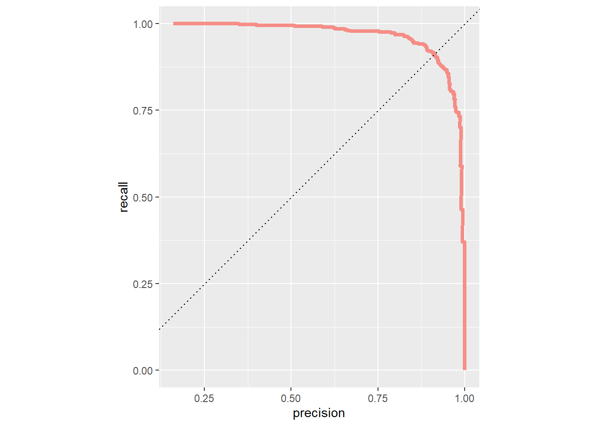

library("tidyverse")
library("tidymodels")
library("finetune")
library("bonsai")
library("patchwork")
library("ggtext")
library("stacks")
library("kernlab")
library("ggplotify")Problem Set 08
Foreword
In this exercise session, we want to explore Support Vector Machines (SVMs) and Stacking in practice. In the first exercise, we will consider a simple dataset with two labels and apply different SVMs to it. Subsequently, we apply an SVM model to a more complex dataset, i.e., the bank churners dataset we considered in the last few exercises. In the last exercise, we aggregate our best models in a stack and create an ensemble estimator.
Exercises
Packages used throughout the session.
Exercise 01: SVMs - Toy examples
Exercise 1a:
The ex01.csv dataset contains a dataset based on two-dimensional normal distributions. Additionally, labels are provided that split the dataset into two classes -1 and 1.
Import the dataset into a tibble named data, convert the column y to a factor, and create a scatter plot that displays the two classes. An example of what such a plot looks like can be found below.
Exercise 1a: Fitting different SVMs
Without creating a workflow or recipe, we now want to train three different SVMs.
Recall from the lecture that we are trying to solve the dual problem
\[ L_D = \sum_{i=1}^{n} \alpha_i-\frac{1}{2}\sum_{i=1}^{n}\sum_{j=1}^n\alpha_i\alpha_jy_iy_jx_i^\top x_j, \quad \text{s.t.} \quad \alpha_i \geq 0\text{ for all } i. \]
Solving the dual problem above yields a linear SVM. We can, however, enrich our feature space by replacing the term \(x_i^\top x_j\) with a function \(K:\mathbb{R}^k\times\mathbb{R}^k\to \mathbb{R}\). In the simple linear case, \(K(x_i,x_j) = x_i^\top x_j\). For polynomials of degree \(d\geq 2\), we apply the kernel function \(K(x_i,x_j)= (1+x_i^\top x_j)^d\). Another popular choice we will consider is the so-called radial basis kernel given by
\[ K(x_i,x_j)= \exp\left(-\frac{\|x_i - x_j\|^2}{c}\right)^d, \quad c\geq 0. \]
Exercise 1a i:
Using the svm_poly function that returns a {parsnip} model, create a linear SVM for our classification problem by setting the degree to \(1\) and mode to "classification". Afterward, set the engine to "kernlab" and apply the fit function by fitting every variable on y using the dataset data. Then, save the trained model in a {parsnip} model object called svm_lin_res. If you successfully solved the exercise, calling the svm_lin_res object should return the following output:
parsnip model object
Support Vector Machine object of class "ksvm"
SV type: C-svc (classification)
parameter : cost C = 1
Polynomial kernel function.
Hyperparameters : degree = 1 scale = 1 offset = 1
Number of Support Vectors : 18
Objective Function Value : -15.2545
Training error : 0.1
Probability model included. Exercise 1a ii:
Repeat Exercise 1a i, but instead of using a linear SVM, create a quadratic SVM model called svm_quad_res by setting the degree parameter to \(2\).
Exercise 1a iii:
Repeat Exercise 1a i, but instead of using the svm_poly function, use the svm_rbf function to create an SVM model with radial basis kernel called svm_rbf_res.
Exercise 1b: Plotting decision surfaces
Given our three different SVMs, we can easily plot the decision surfaces by extracting the fit engine and passing it to the kenrlabs::plot function.
Exercise 1b: i
Given the following three plots, match each plot with the corresponding SVM:
Exercise 1b: ii
In this sub-exercise, we want to go a bit more into detail with respect to the classification plots. Describe in a bit more detail, what we can conclude by looking at the plot below.

Exercise 1c:
In this exercise, we want to take a closer look at the performance of the radial basis kernel SVM. Using the augment function, we can collect the predicted classes and class probabilities of our model. In order to do so, pass the svm_rbf_res object to the augment function, where you have to pass data = data as an argument. Given the resulting tibble, use the roc_curve function to create a ROC-Curve for the svm_rbf_res model.
An example can be found below.
Exercise 02: Tuning an SVM model
In this exercise, we will revisit the bank churners dataset. Below you can find the necessary preprocessing steps, a brief glimpse into the dataset to refresh your memory, a data splitting and resampling procedure, and a predefined recipe that we will use throughout this and the next exercise.
The goal of this exercise is to create an SVM model with an RBF kernel that serves as a classifier for our underlying dataset.
credit_info <- read.csv("BankChurners.csv")
glimpse(credit_info)Rows: 10,127
Columns: 21
$ CLIENTNUM <int> 768805383, 818770008, 713982108, 769911858, 7…
$ Attrition_Flag <chr> "Existing Customer", "Existing Customer", "Ex…
$ Customer_Age <int> 45, 49, 51, 40, 40, 44, 51, 32, 37, 48, 42, 6…
$ Gender <chr> "M", "F", "M", "F", "M", "M", "M", "M", "M", …
$ Dependent_count <int> 3, 5, 3, 4, 3, 2, 4, 0, 3, 2, 5, 1, 1, 3, 2, …
$ Education_Level <chr> "High School", "Graduate", "Graduate", "High …
$ Marital_Status <chr> "Married", "Single", "Married", "Unknown", "M…
$ Income_Category <chr> "$60K - $80K", "Less than $40K", "$80K - $120…
$ Card_Category <chr> "Blue", "Blue", "Blue", "Blue", "Blue", "Blue…
$ Months_on_book <int> 39, 44, 36, 34, 21, 36, 46, 27, 36, 36, 31, 5…
$ Total_Relationship_Count <int> 5, 6, 4, 3, 5, 3, 6, 2, 5, 6, 5, 6, 3, 5, 5, …
$ Months_Inactive_12_mon <int> 1, 1, 1, 4, 1, 1, 1, 2, 2, 3, 3, 2, 6, 1, 2, …
$ Contacts_Count_12_mon <int> 3, 2, 0, 1, 0, 2, 3, 2, 0, 3, 2, 3, 0, 3, 2, …
$ Credit_Limit <dbl> 12691.0, 8256.0, 3418.0, 3313.0, 4716.0, 4010…
$ Total_Revolving_Bal <int> 777, 864, 0, 2517, 0, 1247, 2264, 1396, 2517,…
$ Avg_Open_To_Buy <dbl> 11914.0, 7392.0, 3418.0, 796.0, 4716.0, 2763.…
$ Total_Amt_Chng_Q4_Q1 <dbl> 1.335, 1.541, 2.594, 1.405, 2.175, 1.376, 1.9…
$ Total_Trans_Amt <int> 1144, 1291, 1887, 1171, 816, 1088, 1330, 1538…
$ Total_Trans_Ct <int> 42, 33, 20, 20, 28, 24, 31, 36, 24, 32, 42, 2…
$ Total_Ct_Chng_Q4_Q1 <dbl> 1.625, 3.714, 2.333, 2.333, 2.500, 0.846, 0.7…
$ Avg_Utilization_Ratio <dbl> 0.061, 0.105, 0.000, 0.760, 0.000, 0.311, 0.0…credit_info_clean <-credit_info %>%
mutate(Income_Category = factor(Income_Category,
levels = c("Unknown","Less than $40K",
"$40K - $60K","$60K - $80K",
"$80K - $120K","$120K +"),
ordered = TRUE),
Education_Level = factor(Education_Level,
levels = c("Unknown", "Uneducated",
"High School", "College",
"Graduate","Post-Graduate",
"Doctorate"),
ordered = TRUE),
CLIENTNUM = factor(CLIENTNUM),
Marital_Status = factor(Marital_Status),
Card_Category = factor(Card_Category),
Gender = factor(Gender),
Attrition_Flag = factor(Attrition_Flag,
labels = c("Inactive", "Active")),
)
set.seed(1)
split <- initial_split(credit_info_clean, strata = Attrition_Flag)
data_train <- training(split)
data_test <- testing(split)
folds <- vfold_cv(data_train, v = 10)
rec_ci <- recipe(Attrition_Flag ~., data = data_train) %>%
update_role(CLIENTNUM, new_role = "ID") %>%
step_ordinalscore(all_ordered_predictors()) %>%
step_dummy(all_factor_predictors()) %>%
step_normalize(all_predictors())
ci_wf <- workflow() %>%
add_recipe(rec_ci)Exercise 2a: SVM without tuning
Exercise 2a i:
Similar to Exercise 1a iii, create an RBF Kernel SVM called svm_model_rbf, add it to the workflow defined above, and train it using the fit function.
Exercise 2a ii:
Similar to Exercise 2a ii on Exercise Sheet 06, create two tibbles containing the data necessary to plot an ROC- and PR curve based on the test data. Note, that you can access the necessary data by using the augment function similar to Exercise 1c on this exercise sheet.
When creating the tibbles, make sure you change the model name to "SVM", so that we can correctly identify the models later during model evaluation.
Exercise 2b: SVM with with tuning
In this exercise, we want to tune the parameter cost, i.e. the parameter \(D\) in the maximum margin formulation
Recall, that the cost parameter penalizes samples that are predicted to be in the wrong class. A larger cost will thus lead to a more flexible model with fewer misclassifications (Bias-Variance tradeoff). This means that compared to Ridge and Lasso regression, the effect is reversed! (Why?)
Exercise 2b i:
Create a model specification called svm_model_rbf_tune for an SVM model with RBF kernel similar to Exercise 2a i, where the cost parameter is set to tune. Afterward, update the model in the ci_wf workflow.
Exerice 2b ii:
Train the model using the tune_grid function with grid = 5 and resamples = folds. Save the results in a tibble called svm_res_rbf_tuned.
Warning
Model takes around 3 Minutes on my station to train!
Exercise 2b iii:
Similar to Exercise 2a ii on Exercise Sheet 06, select the best model based on the metric "roc_auc" and train it on the entire training set. Subsequently, create two tibbles containing the data necessary to plot a ROC- and PR curve. When creating the tibbles, make sure you change the model name to "SVM tuned", so that we can correctly identify the models later during model evaluation.
Exercise 2c: Comparing results
Create a plot showing the ROC- and PR-curve for each of the models we trained in the previous exercises (SVM and tuned SVM). Compare the performances visually and decide which model performed the best. For reference, you can find what such a plot could look like below.
Exercise 03: Stacking
In this last exercise, we want to create a Stack model, i.e., an ensemble method taking the outputs of multiple models and combining them to generate an ensemble that generates predictions informed by each of its members. (cf. source)
The modeling process for a stack can be described as follows:
Define candidates for the stack by creating a (tuned) model as we have in the previous exercises. Using the
control_stack_gridwe can add models that resulted from a tuning procedure to the stack.Initialize a stack object using the
stacksfunction.Add candidate models to the stack using the
add_candidatesfunction.Pass the
stackobject to theblend_predictionsfunction, which specifies how the predictions of each candidate are evaluated.Fit the candidate ensemble with non-zero stacking coefficients using the
fit_membersfunction.Predict on test data using the
predictfunction to evaluate out-of-sample performance.
Exercise 3a: Creating a control-stack-grid and candidates
Exercise 3a i:
Create a control stack grid called ctrl_grid using the control_stack_grid function.
Exercise 3a ii: Training a classification tree
Create a classification tree called ct_model similar to Exercise 2c i on Exercise Sheet 05, by using the decision_tree function with the parameters min_n = tune(), tree_depth = tune(), cost_complexity = tune(). Set the mode to "classification" and the engine to "rpart". Update the workflow ci_wf by using the update_model function. Finally, train the model using the tune_grid function with the parameter grid = 30. Set the parameters resamples = folds and control = ctrl_grid to make sure that every potential ensemble member is saved. Save the results in a tibble called ct_res.
Exercise 3a iii: Training a random forest
Create and train a random forest model with \(1000\) trees, similar to Exercise 2d on Exercise Sheet 05. Tune the parameters mtry and min_n, and set the engine to "ranger". Then, update the model in the workflow object ci_wf and train the model using the tune_grid function with the parameters grid = 10, resamples = folds, and control = ctrl_grid. Save the results in a tibble called rf_res.
i Creating pre-processing data to finalize unknown parameter: mtryExercise 3a iii: Training a xgb-model
Last but not least, create a boosted tree model xgb_model, set the number of trees to 1000, and every other parameter to tune(), except for sample_size. Pass "xgboost" as the engine and set the mode to "classification". Similar to Exercise 2b ii on Exercise Sheet 06, create a grid called xgb_grid for the hyperparameters using the grid_latin_hypercube function with size = 30. Don’t forget to finalize the parameter mtry with the baked recipe in order to avoid training errors!
Once everything is set update the model in the ci_wf workflow and tune the model using the tune_grid function with the parameters grid = xgb_grid, resamples = folds, and control = ctrl_grid. Save the results in a tibble called xgb_res.
Warning
Training the XGBoost model takes around 10-15 minutes on my machine.
Exercise 3b: Creating a Stack
Now, that we have successfully trained all model candidates, we can specify and fit our stack!
Exercise 3b i:
Start out by creating a stacks object called ci_stack. Afterward, pipe the newly created stacks object to the add_candidates function where the argument is ct_res. Repeat this procedure for the tuned random forest object rf_res and tuned XGBoost model xgb_res.
Exercise 3b ii:
Given the stack with the candidate models, we now want to specify how we blend predictions.
The blend_predictions function allows us to specify some of the pa: By using the blend_predictions function, we can specify, how the predictions should be blended together. The options we are interested in are the following:
mixture: A number between zero and one (inclusive) specifying the proportion of L1 regularization (i.e. lasso) in the model.
mixture = 1indicates a pure lasso model,mixture = 0indicates ridge regression, and values in the open interval (0,1) specify an elastic net.metric: The metric(s) to use in tuning the regularization penalty on the stacking coefficients.
Your exercise is to pipe the stack object ci_stack with the added candidates to the blend_predictions function, where you pass metric = metric_set(pr_auc) and mixture = 0.9 as an argument.
Exercise 3b iii:
Finally, fit the stack by passing the previously specified stack object that contains the candidates and blend specifications to the fit_members() function.
Warning: Predictions from 8 candidates were identical to those from existing candidates
and were removed from the data stack.If you have solved the exercise correctly, the following output should be displayed when calling the ci_stack object.
# A tibble: 7 × 3
member type weight
<chr> <chr> <dbl>
1 .pred_Active_xgb_res_1_21 boost_tree 1.33
2 .pred_Active_xgb_res_1_15 boost_tree 1.24
3 .pred_Active_xgb_res_1_10 boost_tree 0.907
4 .pred_Active_rf_res_1_05 rand_forest 0.547
5 .pred_Active_rf_res_1_08 rand_forest 0.227
6 .pred_Active_rf_res_1_09 rand_forest 0.164
7 .pred_Active_rf_res_1_02 rand_forest 0.0556Exercise 3c: Evaluating the stack
In this last exercise, we want to evaluate our stack and in order to do so, we first need to create predictions from our test dataset. The following code snippet creates predictions based on the test set and saves the probabilities of the sample belonging to either class in a new column.
stack_pred <-
data_test %>%
bind_cols(predict(ci_stack, ., type = "prob"))Exercise 3c i:
Given the stack_pred tibble, create a ROC- and PR-Curve similar to Exercise 2d on Exercise Sheet 06.

Exercise 3c ii:
Similar to Exercise 2e on Exercise Sheet 06, create a confusion matrix and evaluate the model performance based on the sensitivity, precision and accuracy.